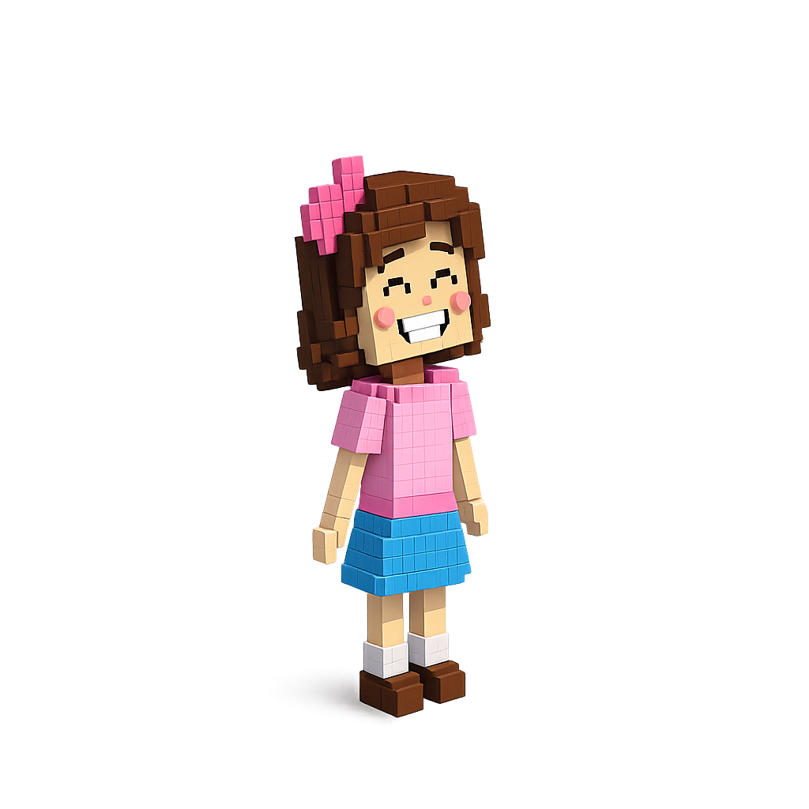

Kayro Kennedy e Felipe gabriel


Tia, hoje a professora falou sobre "Ética, Trabalho e Cidadania". Achei os nomes bonitos, mas não entendi direito como eles se misturam...

É mais simples do que parece, Sofia! Pense no seu tio que é médico. O Trabalho dele é cuidar das pessoas, certo?

Sim, ele vive no hospital!
Pois é. A Ética é o que faz ele atender todos os pacientes com mesmo cuidado, sem contar os segredos deles para ninguém e sendo sempre honesto. É fazer o certo mesmo quando ninguém está olhando.
Entendi. E a Cidadania?
A cidadania aparece quando ele usa o trabalho dele para ajudar a comunidade. Por exemplo, quando ele exige que o hospital tenha remédios para todos ou quando ele vota em projetos que melhoram a saúde do bairro.
Ah! Então o trabalho é o que a gente faz, a ética é como a gente escolhe fazer, e a cidadania é como isso ajuda todo mundo a viver melhor?
Exatamente! Você melhor que muita gente grande.
A construção de uma sociedade justa, desenvolvida e equilibrada não ocorre por acaso. Ela se fundamenta em um tripé essencial que conecta a conduta individual ao bem-estar coletivo. Esse tripé é composto por três conceitos intrinsecamente ligados: a ética, o trabalho e a cidadania. Embora distintos em suas definições, eles operam de forma integrada para moldar não apenas o caráter do indivíduo, mas o destino de toda a comunidade. A ética é a bússola que orienta o comportamento humano. Ela se refere aos princípios e valores morais que guiam nossas escolhas e ações, determinando o que é certo ou errado, justo ou injusto. Ter ética não é apenas seguir regras ou leis, mas agir de forma íntegra e responsável mesmo quando ninguém está olhando. Na vida cotidiana, a ética manifesta-se no respeito ao próximo, na honestidade, na transparência e no compromisso com o bem comum. Sem uma base ética sólida, as relações interpessoais e as instituições perdem a confiança, que é a cola que mantém a sociedade unida. O trabalho, por sua vez, é o meio pelo qual o ser humano transforma o mundo e a si mesmo. Ele não é apenas uma forma de subsistência, mas um veículo de realização pessoal e de contribuição para o desenvolvimento da coletividade. Quando o trabalho é exercido com ética, ele se torna uma força poderosa. Isso significa desempenhar as funções com diligência, competência e responsabilidade, respeitando os colegas, os clientes e o meio ambiente. Um ambiente de trabalho ético promove a justiça, a meritocracia e a inovação, gerando valor para a economia e dignidade para o trabalhador. A cidadania é o exercício pleno dos direitos e deveres em uma sociedade organizada. Ser cidadão vai além de ter uma nacionalidade; envolve a participação ativa na vida política, social e econômica do país. A cidadania é a aplicação prática da ética no contexto coletivo. Um cidadão ético é aquele que respeita as leis, paga seus impostos, vota de forma consciente e se engaja em ações que melhoram a sua comunidade. O exercício da cidadania fortalece a democracia, combate a corrupção e garante que as políticas públicas atendam às necessidades da população. A interdependência entre esses três conceitos é evidente. A ética fundamenta o trabalho de qualidade, que, por sua vez, é a base para o desenvolvimento de uma economia forte e para o sustento da cidadania. Quando agimos com ética no trabalho, estamos contribuindo para uma sociedade mais próspera e justa, o que fortalece o exercício da cidadania. Por outro lado, um cidadão consciente e engajado luta por condições de trabalho dignas e por uma ética mais rigorosa nas instituições. Em conclusão, ética, trabalho e cidadania não são apenas conceitos abstratos, mas sim práticas diárias que definem a qualidade de vida e o futuro de uma nação. Ao cultivarmos a ética em nossas ações individuais, ao desempenharmos nosso trabalho com responsabilidade e integridade, e ao exercermos nossa cidadania de forma ativa e consciente, estamos plantando as sementes de uma sociedade mais harmônica, próspera e justa para todos. Este é o desafio e a recompensa de vivermos em comunidade.
Kayro Kennedy e Felipe Gabriel